Inhalt Index DeskTop Bronstein

 Funktionalanalysis Nichtlineare Operatoren Beispiele nichtlinearer Operatoren
Funktionalanalysis Nichtlineare Operatoren Beispiele nichtlinearer Operatoren


Seien  eine meßbare Teilmenge aus
eine meßbare Teilmenge aus  (s. Sigma-Algebren) und 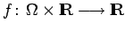 eine Funktion von zwei Variablen 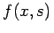, die bezüglich x für fast alle s stetig und bezüglich s für alle x meßbar ist (CARATHEODORY-Bedingungen). Der nichtlineare Operator 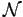 auf 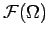
(s. Sigma-Algebren) und 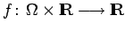 eine Funktion von zwei Variablen 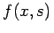, die bezüglich x für fast alle s stetig und bezüglich s für alle x meßbar ist (CARATHEODORY-Bedingungen). Der nichtlineare Operator 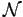 auf 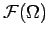
heißt NEMYTSKIJ-Operator. Er ist stetig und beschränkt, falls er aus  in 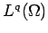 mit 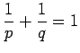 abbildet. Dies ist zum Beispiel der Fall, wenn
in 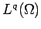 mit 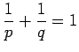 abbildet. Dies ist zum Beispiel der Fall, wenn
gilt oder stetig ist, gilt. Nur in Ausnahmefällen ist der Operator kompakt.